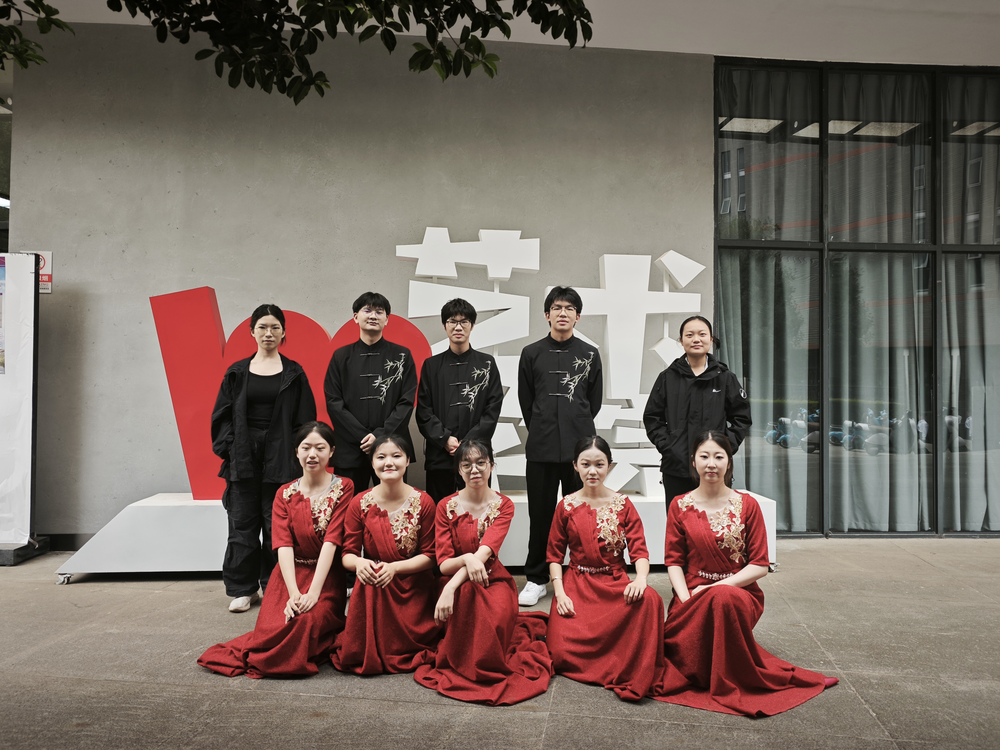
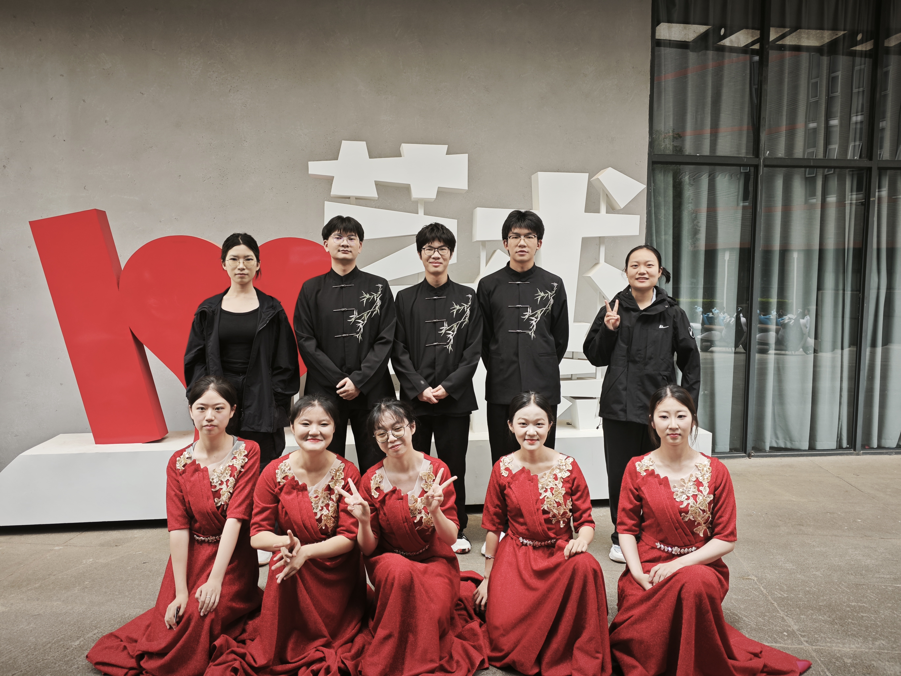
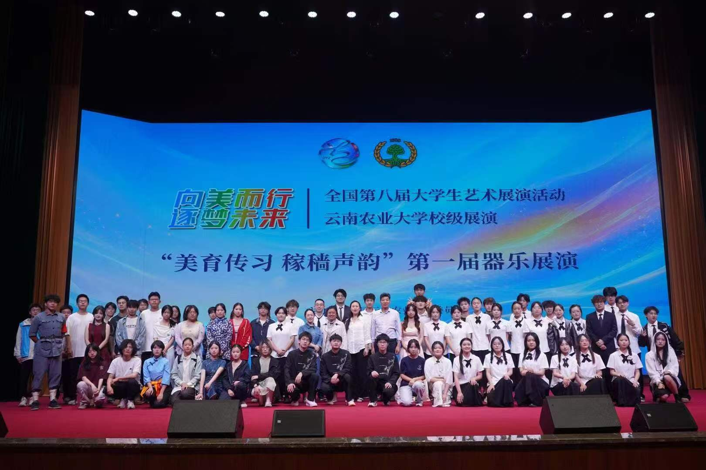
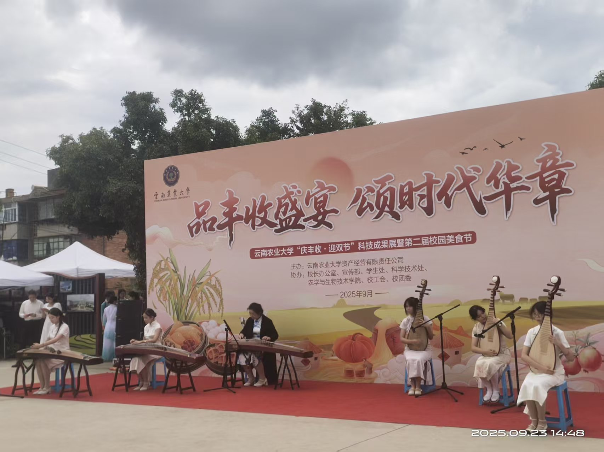
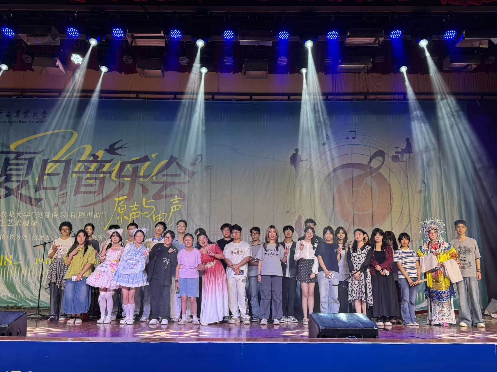
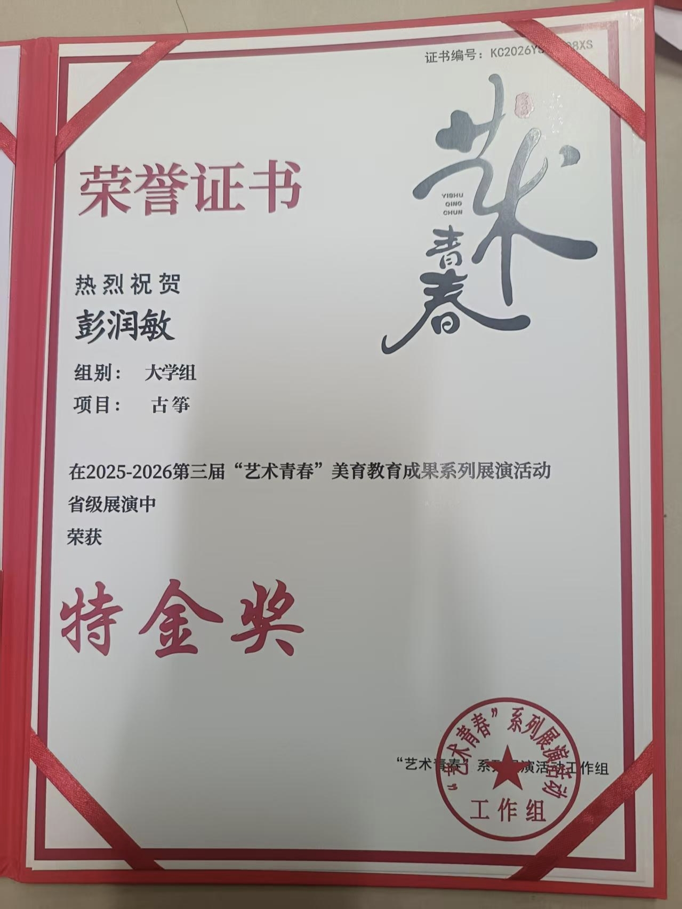
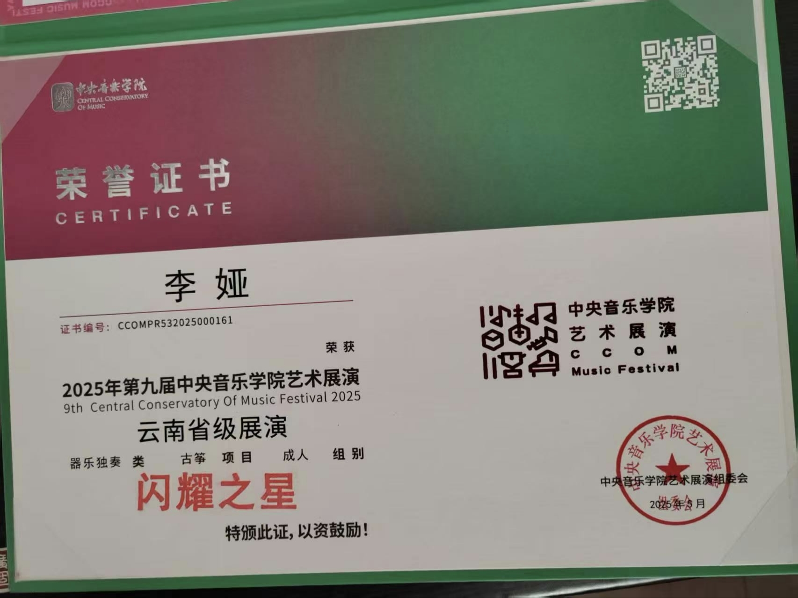
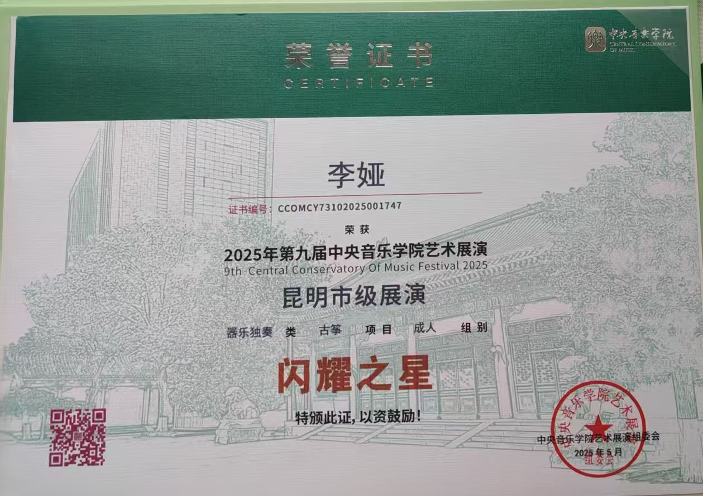

弹拨部
由古筝、琵琶、阮等弹拨类乐器组成。

01 / 社团简介
本社团成立于2024年，以传承传统民乐文化、弘扬国风经典、普及民族乐器演奏为宗旨，长期开展乐器零基础教学、曲目排练、节日文艺汇演、民乐赏析分享会等活动。近年来，社团围绕国风文化进校园不断推进品牌建设，形成了零基础友好教学、舞台实践常态化的特色。未来，社团将持续编排经典民乐曲目，吸纳民乐爱好者，丰富校园传统文化氛围。
02 / 部门组成
弹拨、吹奏、拉弦、打击，四部和而不同。
由古筝、琵琶、阮等弹拨类乐器组成。
由笛子、埙等吹奏类乐器组成。
由二胡等拉弦类乐器组成。
由中国鼓等打击类乐器组成。
03 / 精彩瞬间
每一次登台，都是传统与现代交汇的瞬间。




04 / 精彩活动
日常排练与舞台实践并存，用民乐连接校园与传统。
01
深入落实美育教育渗透行动的相关要求，培养“以美育人、以文化人”的理念，同时丰富校园文化生活，展现农大学生的青春风采！器乐及其他团体项目专场、声乐+朗诵专场、舞蹈专场，三场特别演出充满激情。
查看新闻报道02
为庆贺农业实训丰收、喜迎双节佳节，举办科技成果展暨第二届校园美食节。集中展示园艺栽培、作物育苗等专业科创成果，结合实训产出农产品打造特色美食体验，融合专业实践与校园文化，彰显农林学子实践创新风采。
05 / 荣誉墙
每一次登台出征，都是热爱与坚持结出的果实。


